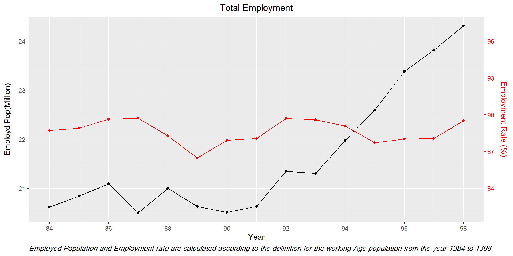
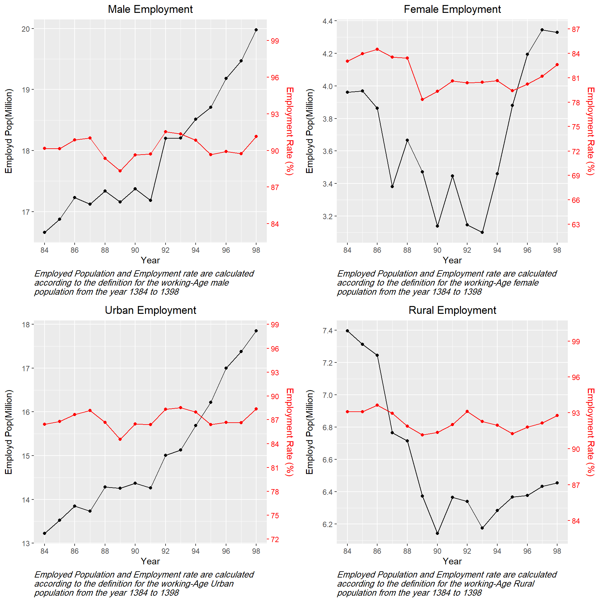

6 Descriptive Evidence

LFS_Indicators_Y <- readRDS("C:/Users/ali/Dropbox/LFS Cleaning/GitHub/R Codes/Consistency/LFS_Indicators_Y.RDS")
LFS_Indicators_Y <- LFS_Indicators_Y%>%
mutate(EMPR_T = Total_Employment/Total_Participation,
EMPR_M = Male_Employment/Male_Participation,
EMPR_F = Female_Employment/Female_Participation,
EMPR_U = Urban_Employment/Total_Participation,
EMPR_R = Rural_Employment/Rural_Participation,
UMPR_T = Total_Unemployment / Total_Participation,
UMPR_M = Male_Unemployment/Male_Participation,
UMPR_F = Female_Unemployment/Female_Participation,
UMPR_U = Urban_Unemployment/Urban_Participation,
UMPR_R = Rural_Unemployment/Rural_Participation)%>%
mutate_at(vars(Male_Employment:Urban_Participation),`/`,1000000)%>%
mutate_at(vars(EMPR_T:UMPR_R),`*`,100)
LFSINP2 <- function(df,x = "",y1 = "", y2 = "", Main = "",y1l = "" ,y2l = "",y1lim =NULL ){
P <- twoord.plot(lx = x, ly =y1 , rx = x , ry =y2, data = df,lylim = y1lim,mar = c(5,4,4,4),
main = Main , ylab =y1l, rylab = y2l , lpch = 10,rpch = 10,
lcol = "black" ,rcol = "red",xlab = "Year",
do.first="plot_bg();grid(col=\"white\",lty=15)")
}
LFSINP1 <- function(Var, xlab = "", ylab = "", Main = "") {
p <- ggplot(data = LFS_Indicators_Y,mapping = aes(x=Year,y=eval(parse(text =Var ))/1000000))+
geom_point(color = "Red",shape = 17)+
geom_line()+
labs(title = Main,x=xlab,y=ylab)
return(p)
}6.1 Employment

6.2 Unemployment
## [1] 2.353153 3.228798